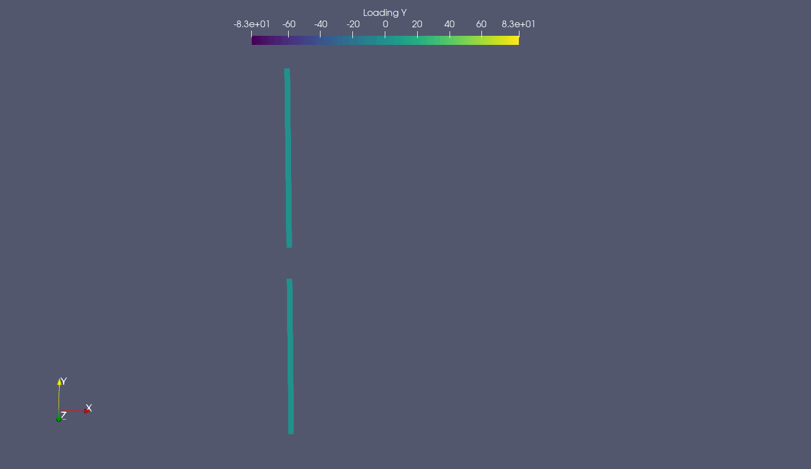

WriteVTK.jl Support
AcousticAnalogies.jl can write out CompactF1ASourceElement structs to VTK files, allowing us to easily visualize the state and motion of the acoustic sources in popular visualization tools (e.g. ParaView). This is very useful for checking that the motion, loading, coordinate system, etc. is what we expect.
To write out VTK files, we just need to pass an array of source elements to the AcousticAnalogies.to_paraview_collection function. We'll use CCBlade.jl to calculate the aerodynamic loads, and the CCBlade.jl helper routines that AcousticAnalogies.jl provides to create the source elements from the CCBlade.jl data.
using AcousticAnalogies
using CCBlade
# Define the blade geometry.
B = 2
Rhub = 0.10
Rtip = 1.1684 # meters
radii = Rhub .+ range(0.0, 1.0, length=31).*(Rtip - Rhub)
radii = 0.5.*(radii[2:end] .+ radii[1:end-1])
cs_area_over_chord_squared = 0.064
chord = [
0.35044 , 0.28260 , 0.22105 , 0.17787 , 0.14760,
0.12567 , 0.10927 , 0.96661E-01 , 0.86742E-01 ,
0.78783E-01 , 0.72287E-01 , 0.66906E-01 , 0.62387E-01 ,
0.58541E-01 , 0.55217E-01 , 0.52290E-01 , 0.49645E-01 ,
0.47176E-01 , 0.44772E-01 , 0.42326E-01 , 0.39732E-01 ,
0.36898E-01 , 0.33752E-01 , 0.30255E-01 , 0.26401E-01 ,
0.22217E-01 , 0.17765E-01 , 0.13147E-01 , 0.85683E-02 ,
0.47397E-02].*Rtip
theta = [
40.005, 34.201, 28.149, 23.753, 20.699, 18.516, 16.890, 15.633,
14.625, 13.795, 13.094, 12.488, 11.956, 11.481, 11.053, 10.662,
10.303, 9.9726, 9.6674, 9.3858, 9.1268, 8.8903, 8.6764, 8.4858,
8.3193, 8.1783, 8.0638, 7.9769, 7.9183, 7.8889].*(pi/180)
# Define the operating point.
rpm = 2200.0
omega = rpm*(2*pi/60.0)
rho = 1.226 # kg/m^3
c0 = 340.0 # m/s
mu = 0.1780e-4 # kg/(m*s)
pitch = 0.0 # rad
Vinf = 5.0 # m/s
# Create an airfoil interpolation object.
xrotor_config = XROTORAirfoilConfig(
A0=0.0, DCLDA=6.2800, CLMAX=1.5, CLMIN=-0.5, DCLDA_STALL=0.1,
DCL_STALL=0.1, MCRIT=0.8, CDMIN=0.13e-1, CLDMIN=0.5, DCDCL2=0.4e-2, REREF=0.2e6, REXP=-0.4)
airfoil_interp(a, r, m) = af_xrotor(a, r, m, xrotor_config)
# Create the CCBlade.jl structs.
rotor = Rotor(Rhub, Rtip, B)
sections = Section.(radii, chord, theta, Ref(airfoil_interp))
ops = OperatingPoint.(Vinf, omega.*radii, rho, pitch, mu, c0)
outs = solve.(Ref(rotor), sections, ops)
# Create the AcousticAnalogies.jl source elements.
bpp = 60/(rpm*B)
period = 2*bpp
num_source_times = 64
positive_x_rotation = true
ses = f1a_source_elements_ccblade(rotor, sections, ops, outs, fill(cs_area_over_chord_squared, length(radii)), period, num_source_times, positive_x_rotation)
@show size(ses)(64, 30, 2)ses is an array of source elements of shape (num_source_times, num_radial, B), where num_source_times is the number of time steps over which the source elements are defined, num_radial is the number of radial elements each blade is subdivided into, and B is the number of blades.
Now that we have an array of source elements, we can write them out to VTK files.
name = "two_blade_example"
outfiles = AcousticAnalogies.to_paraview_collection(name, ses)65-element Vector{String}:
"two_blade_example.pvd"
"two_blade_example00000001.vtp"
"two_blade_example00000002.vtp"
"two_blade_example00000003.vtp"
"two_blade_example00000004.vtp"
"two_blade_example00000005.vtp"
"two_blade_example00000006.vtp"
"two_blade_example00000007.vtp"
"two_blade_example00000008.vtp"
"two_blade_example00000009.vtp"
⋮
"two_blade_example00000056.vtp"
"two_blade_example00000057.vtp"
"two_blade_example00000058.vtp"
"two_blade_example00000059.vtp"
"two_blade_example00000060.vtp"
"two_blade_example00000061.vtp"
"two_blade_example00000062.vtp"
"two_blade_example00000063.vtp"
"two_blade_example00000064.vtp"This will write out one polygonal VTK (.vtp) file per time step, along with a ParaView collection (.pvd) file that allows us to open all of the .vtp files at once.
Here's an example visualization of the above example, showing an animation of the loading in the y direction, which is normal to the rotation axis of the rotor. 